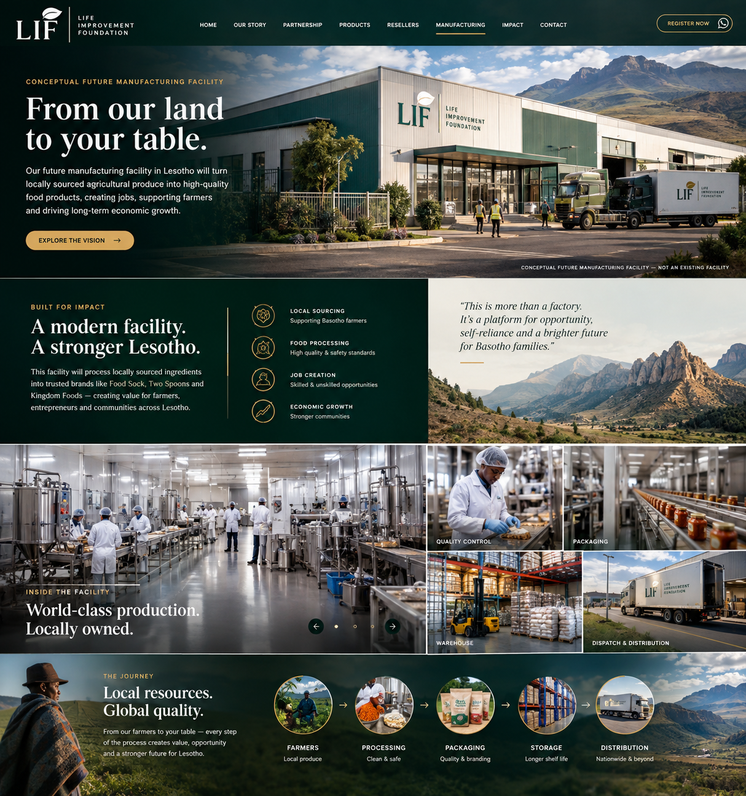

From our land
to our table.
A future manufacturing vision for Lesotho: locally sourced agricultural produce transformed into trusted food products, creating jobs, skills, enterprise and stronger domestic productive capacity.
Explore the vision →See the partnership
A modern facility. A stronger Lesotho.
The manufacturing vision connects the market created by products and resellers to a future production base in Lesotho. The intended model is simple: source locally where possible, process safely, package locally, distribute widely and keep more value circulating in the national economy.
The planned operation is intended to support Food Sock products and other trusted food brands, alongside local agricultural supply and future value-added production.
Local resources. Global quality.
The visitor experience should make the whole economic story visible — from the farmer and raw material to processing, packaging, storage and distribution.
Farmers
Local agricultural produce and structured outgrower relationships.
Processing
Receiving, inspection, pre-processing and dehydration.
Packaging
Blending, filling, coding and branded finished products.
Storage
Finished-goods warehousing and controlled stock movement.
Distribution
Resellers, shops, institutions, national markets and future exports.
Built around people, quality and opportunity.
Production floor
Industrial food-processing areas designed for disciplined workflows, hygiene and scalable production.
Quality control
Quality assurance and control activities form part of the intended operating model before commercial production.
Packaging & coding
Automated or semi-automated packaging, checkweighing, metal detection and product coding are part of the planned flow.
Warehouse
Finished goods move into organized storage before entering the distribution network.
Dispatch
Products can move from the plant to resellers, supermarkets, institutions and other markets.
Skills & careers
The facility is intended to create pathways into manufacturing, logistics, quality, operations and related services.
The real victory is the factory floor.
When the manufacturing vision becomes reality, the story changes from importing and distributing finished products to building productive capacity at home.
Products today. Production tomorrow.
The reseller programme is part of a bigger journey — building demand, enterprise, partnerships and the foundation for future manufacturing in Lesotho.
Explore the reseller opportunityRegister your interest